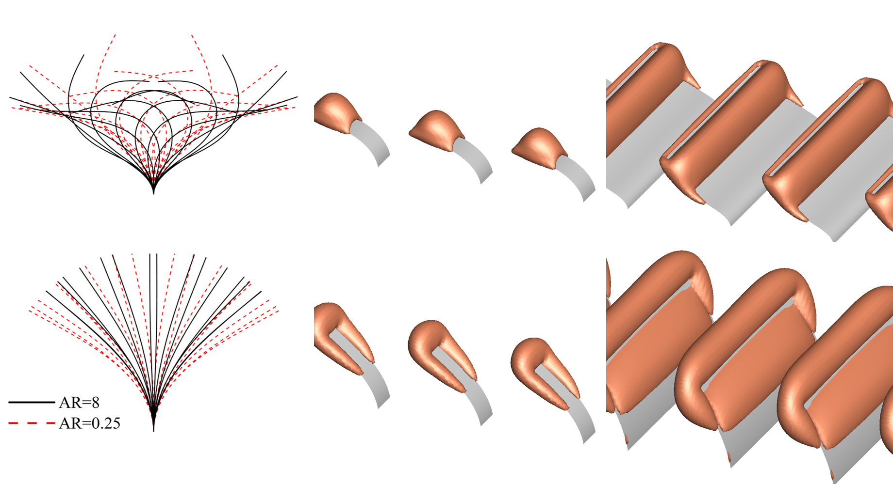
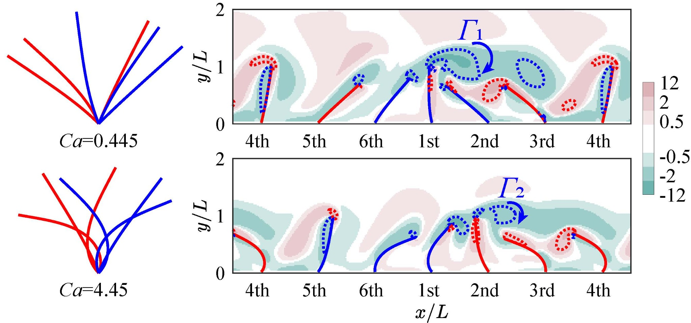

Research
My research explores fluid–structure interaction involving flexible filaments and blades, with particular interests in oscillatory boundary-layer dynamics and fluid transport generated by coordinated, metachronal motion.
Research topics: Flexible filaments and boundary layers | Metachronal rowing and fluid transport
Oscillatory Boundary Layers over Flexible Filaments
I study oscillatory boundary-layer flows over wall-mounted flexible filaments, focusing on the interaction between unsteady fluid motion and filament deformation. This work examines how filament geometry and flexibility shape the surrounding flow under oscillatory forcing.
Y.-H. Xiong, A.-K. Gao, X.-Y. Lu, and S. Chen, “Numerical study of the oscillatory boundary layer over wall-mounted flexible filaments,” Physical Review Fluids, 9, 124101 (2024).

Metachronal Rowing and Fluid Transport
I investigate fluid transport generated by arrays of flexible blades performing impulsive metachronal rowing. Neighbouring blades move with a phase difference, producing coordinated deformation and flow structures. This study examines how flexibility and the Cauchy number influence blade motion, vortical structures, and the resulting fluid transport.
Y.-H. Xiong, A.-K. Gao, X.-Y. Lu, and S. Chen, “Fluid transport by flexible blades performing impulsive metachronal rowing,” Physical Review Fluids, 11, 054103 (2026).

Funding & Computing Resources
The research presented here has been supported by the National Natural Science Foundation of China and carried out using the Hanhai 25 supercomputing system at the Supercomputing Center of the University of Science and Technology of China (USTC).
Acknowledgement. The research presented here has been supported by the National Natural Science Foundation of China (Grant Nos. 12293000, 12293002, and 12388101). Numerical calculations were performed on the Hanhai 25 supercomputing system at the Supercomputing Center of the University of Science and Technology of China (USTC).